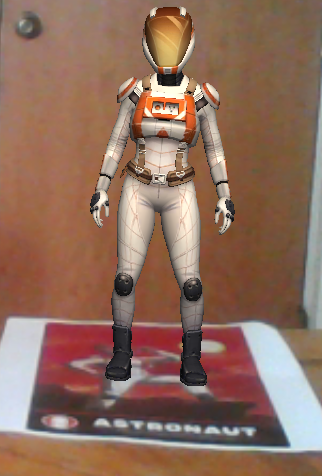

Week 2 of CS 491 was about the introduction to different kind of applications that can be used to build Augmented realtiy and virtual reality programs. The tools discussed were Unity3D and Unreal. The class discussions went into detail about Unity3d. Unity3d provides good cross platform compatibility and various built in modules that make the life of a developer easier. Downloading, installing and configuring Unity3D along with Vuforia is quite a task as it requires alot of configuring. However, there are alot many good tutorials for this. So, the process was not tough. Basic end result looks really good and the resulting application performed really well. Following is the screenshot of the AR application created to explore the basic functionalities of Unity3D tool.
Following steps were followed to get the above results: